광학기사 (2014-05-25 기출문제)
1과목: 기하광학 및 광학기기
1. 렌즈와 사진건판 사이의 간격이 6cm 일 때 무한대에 있는 물체의 사진을 선명학 찍을 수 있는 사진기가 있다. 렌즈로부터 8cm 거리에 있는 물체를 선명하게 찍으려면 렌즈와 사진건판 사이는 몇 cm 떨어져야 하는가?
- 6
- 9
- 12
- 18
(정답률: 45%)

2. 무지개는 태양 빛과 공기 중의 물방울이 만들어 내는 결과이다. 무지개를 만들기까지 빛이 물방울에서 겪는 과정을 순서대로 나열한 것은?
- 굴절 → 굴절 → 굴절
- 굴절 → 굴절 → 반사
- 굴절 → 반사 → 굴절
- 굴절 → 반사 → 반사
(정답률: 83%)
3. 애플레넷(Aplanat)이란 어떤 수차가 제거된 광학계를 의미하는가?
- 구면수차와 코마
- 색수차와 비점수차
- 왜곡수차와 코마
- 비점수차와 구면수차
(정답률: 70%)
4. EFL 100mm, f-2, FOV 90° 의 광학계가 있다. 물체가 무한대에 있을 때, 상의 최대 높이는?
- 20mm
- 40mm
- 50mm
- 100mm
(정답률: 72%)
5. 다음 중 무수차 렌즈의 초점심도(DOF)에 대한 표현식으로 맞는 것은? (단, λ는 사용파장이고, NA는 상 공간의 수치구경이다.)
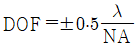
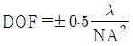
- DOF = ±2λ(f - 수)
- DOF = ±2λ2(f – 수)
(정답률: 59%)
6. 배율이 5인 천체 망원경의 두 렌즈가 30cm 떨어져 있을 때 대물렌즈와 대안렌즈의 초점거리는 각각 몇 cm 인가?
- 대물렌즈 5cm, 대안렌즈 25cm
- 대물렌즈 5cm, 대안렌즈 30cm
- 대물렌즈 25cm, 대안렌즈 5cm
- 대물렌즈 30cm, 대안렌즈 5cm
(정답률: 63%)
7. 굴절률이 1.6인 유리봉의 한쪽 끝을 곡률반경 2.5cm인 단일 구면으로 연마하였다. 유리봉으로 평행 광선이 들어올 때 초점거리는 약 몇 cm 인가?
- 2.5
- 4.0
- 5.0
- 6.7
(정답률: 34%)
8. 다음 중 렌즈의 초점을 구하는 방법이 아닌 것은?
- 유한 공액법
- 노달 슬라이드법
- 시준타켓 배율법
- 푸코(Foucault) 시험법
(정답률: 63%)
9. 같은 유리로 만든 초점거리가 각각 f1, f2인 2개의 렌즈를 이용하여 색수차를 제거하고자 한다. 이때 두 렌즈의 간격은 얼마인가?
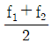
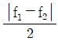
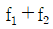
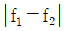
(정답률: 70%)
10. 망원경에 대한 다음 설명 중 틀린 것은?
- 케플러식 망원경은 도립허상을 본다.
- 카세그리안식 망원경의 2차 거울은 볼록거울이다.
- 그레고리식 망원경의 2차 거울은 오목거울이다.
- 케플러식 망원경의 경통길이는 대물렌즈와 접안렌즈의 초점거리의 차와 같다.
(정답률: 73%)
11. 어떤 카메라의 셔터속도를 1/250초, 조리개의 F-수를 2로 하였더니 노출량이 적당하였다. 조리개의 F-수를 1.4로 변화시키면서 동일한 노출량을 유지하려면 셔터속도는 얼마가 되어야 하는가?
- 1/1600 초
- 1/800 초
- 1/500 초
- 1/100 초
(정답률: 56%)
12. 광학유리의 종류에 대한 설명 중 틀린 것은?
- 일반적으로 크라운 유리의 분산상수는 프린트 유리 보다 작다.
- 일반적으로 크라운 유리의 굴절률은 프린트 유리 보다 작다.
- 일반적으로 크라운 유리의 분산은 프린트 유리 보다 작다.
- 일반적으로 크라운 유리로 만든 렌즈가 프린트 유리의 경우보다 색수차가 작다.
(정답률: 58%)
13. 물체의 오른쪽 10cm에 조리개가 놓여 있고, 조리개의 오른쪽 5cm에 +10D의 렌즈가 놓여있다. 렌즈로부터 얼마 떨어진 곳에 출사동이 있는가?
- 렌즈의 오른쪽 5cm
- 렌즈의 오른쪽 10cm
- 렌즈의 왼쪽 5cm
- 렌즈의 왼쪽 10cm
(정답률: 53%)
14. 그림과 같이 두 거울을 60° 각도를 이루도록 설치하고 물체 P를 놓았을 때 상은 몇 개로 보이겠는가?
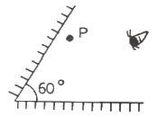
- 5개
- 6개
- 2개
- 3개
(정답률: 67%)
15. 50cm 이상 떨어진 물체를 잘 볼 수 없는 근시인 사람이 이 거리의 물체를 잘 볼 수 있으려면 굴절능이 몇 D인 교정 렌즈를 착용해야 하는가?
- -4D
- -2D
- 2D
- 4D
(정답률: 60%)
16. 평면 스크린 앞 수직거리 d만큼 떨어진 곳에 점광원이 놓여 있다. 스크린 상에서 빛의 최대 세기가 I 였다. 이제 점광원에 대하여 스크린과 반대쪽으로, 수직거리 d만큼 떨어진 곳에, 스크린과 나란하게 평면거울을 놓으면 스크린 상에서 빛의 최대 세기는 얼마가 되는가? (단, 거울의 반사율은 100%로 한다.)
- I
- (5/4)I
- (10/9)I
- (17/16)I
(정답률: 63%)
17. 대안렌지의 초점거리가 2cm, 대물렌즈의 초점거리가 100cm인 망원경이 있다. 배율은 얼마인가?
- 45배
- 50배
- 1/50배
- 200배
(정답률: 84%)
18. 곡률반경이 40cm인 오목거울 앞 1m 되는 곳에 크기가 2cm인 물체가 놓여있다. 상의 위치는 얼마인가?
- 25cm
- 50cm
- 75cm
- 100cm
(정답률: 59%)
19. 삼각프리즘을 통과한 광선이 1m 떨어진 있는 곳에 놓여있는 스크린 위에 입사광선의 방향에 대해서 0.01m 만큼 변위되었다. 이 프리즘은 몇 디옵터 인가?
- 0.01
- 0.1
- 1
- 10
(정답률: 59%)
20. 아나스티그매틱 렌즈(anastigmatic lens)란 무엇인가?
- 구면수차와 코마수차를 보정한 렌즈
- 구면수차와 비점수차를 보정한 렌즈
- 구면수차와 코마수차 및 비점수차를 보정한 렌즈
- 구면수차와 비점수차 및 왜곡수차를 보정한 레즈
(정답률: 62%)
2과목: 파동광학
21. 광섬유는 광신호를 아주 먼 곳으로 전달하는데 쓰이는 것으로 유리나 플라스틱 등을 써서 그림과 같은 단면을 가지도록 머리카락처럼 가늘게 만든 것이다. 빛이 광섬유를 통해 먼 곳까지 잘 전달되려면 코아의 굴절률 ncore와 클래드의 굴절률 nclad 사이에 어떤 관계가 유지되어야 하는가?
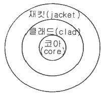
- ncore ＜ nclad
- ncore = nclad
- ncore ＞ nclad
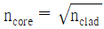
(정답률: 50%)
22. 지구에서 본 태양의 겉보기 각직경(angular diameter)은 0.5° 이다. 600nm 파장의 광을 택해서 이중 슬릿(double slit)에 의한 간섭무늬를 얻고자 할 때, 무늬의 가시도가 0 이 되는 슬릿(slit) 사이의 최소 간격은 얼마인가?
- 42 μm
- 84 μm
- 1⑤ μm
- 126 μm
(정답률: 42%)
23. Young의 간섭실험에서 슬릿의 간격이 0.3mm, 스크린까지의 거리가 1m 일 때 중심의 밝은 무늬로부터 세 번째 밝은 무늬(m=3차)가 가장 밝은 무늬에서 6mm 되는 곳에 나타났다. 이때 사용한 파장은?
- 2000 nm
- 2000 Å
- 6000 nm
- 6000 Å
(정답률: 54%)
24. 영(Young)의 이중 슬릿 실험에서 슬릿의 간격은 d이고, 슬릿과 스크린 사이의 간겨은 D이다. 이 중 슬릿 실험에 사용한 빛의 파장이 λ 일 때, 스크린에 나타나는 밝은 띠 사이의 간격은?
- Dλ/2d
- dλ/2D
- Dλ/d
- dλ/D
(정답률: 57%)
25. 폭이 10cm 이고, 4000 grooves/cm 규격을 가진 회절격자의 1차 회절광을 이용할 때, 파장 600nm 근방에서 분해 가능한 파장 간격은 얼마인가?
- 0.0075nm
- 0.015nm
- 0.03nm
- 0.06nm
(정답률: 65%)
26. 굴절률이 1.5인 유리 내를 진행하는 광이 공기층과 만나는 경계에서 전반사가 일어날 임계각(critical angle, θc)은 얼마인가?
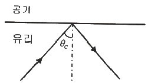
- 26°
- 42°
- 48°
- 53°
(정답률: 50%)
27. 다음 중 회절이론과 관계가 없는 것은?
- 호이겐스(Huygens) 원리
- 셀마이어(Sellmeier) 방정식
- 레일리-조머펠트(Rayleigh-Sommerfeld) 스칼라식
- 프레넬-키르히호프(Fresnel-Kirchhoff) 스칼라 이론
(정답률: 53%)
28. 공간주파수(Spatial frequency)의 단위는?
- Hz
- cycles/mm
- cycles/s
- lines/s
(정답률: 62%)
29. 단속파장(cut off wavelength)이 1.3μm인 단일모드 광섬유가 있다. 다음의 설명 중 맞는 것은?
- 파장이 1.5μm인 광파는 광섬유를 진행할 수 없다.
- 파장이 1μm인 광파는 광섬유를 진행할 수 없다.
- 파장이 1.5μm인 광파에 대해서는 1개 이상의 모드가 존재할 수 있다.
- 파장이 1μm인 광파에 대해서는 1개 이상의 모드가 존재할 수 있다.
(정답률: 55%)
30. 바둑판 격자 형태의 상을 변조하기 위해서 푸리에변환된 면 위에 몇 개의 구멍이 뚫린 마스크(공간필터)를 놓고, 광축에 수직으로 좁은 슬릿을 놓아서 수직 방향으로 분포된 고차 회절무늬만을 통과시킬 경우 어떤 상을 관찰할 수 있는가?
- 상을 관찰할 수 없다.
- 격자의 수평선만 볼 수 있다.
- 격자의 수직선만 볼 수 있다.
- 바둑판 격자 형태의 상을 볼 수 있다.
(정답률: 65%)
31. 어떤 원자가 10-8s 동안 wo의 각 진동수로 빛을 발하고 있었다면, 이 빛의 주파수 반치폭(full width at half maximum)은 얼마인가?
- 10 MHz
- 16 MHz
- 100 MHz
- 628 MHz
(정답률: 47%)
32. 임의의 고정된 평관의 입력광에 대해 투과측이 서로 임의의 각도로 설정된 두 개의 선편광기 사이에 λ/2 파장판을 위치시켜 360도 회전시켜가며 출력광의 광세기를 관측하였다. 이 때 출력광의 최대 광세기는 몇 번 관찰되겠는가?
- 1번
- 2번
- 3번
- 4번
(정답률: 62%)
33. 광섬유에 대한 설명으로 틀린 것은?
- single mode fiber는 섬유의 연결접착이 multimode fiber보다 용이하다.
- multimode fiber에는 LED를 광원으로 사용할 수 있다.
- GRIN fiber는 multimode fiber 보다 신호의 분산이 작다.
- multimode fiber는 single mode fiber 보다 가격이 저렴하다.
(정답률: 37%)
34. 유리나 플라스틱 등 매질의 공간적 굴절률 변화나 공기의 난류 현상 등을 눈으로 직접 관찰하고자 할 때 사용할 수 있는 것은?
- 코누와선
- 라우에 사진
- 엑스선 사진
- 무아레 무늬
(정답률: 63%)
35. 파동이 진행할 때 회절하는 정도에 관계되는 것은?
- 파장
- 흡수
- 진폭
- 복사조도
(정답률: 58%)
36. 대물경 지름이 1.0m인 반사망원경으로 밤하늘에 보이는 별이 이중성(double star)인지 아닌지를 밝혀내려 한다. 사용하는 빛의 파장이 5000Å이라면 이 망원경으로 식별할 수 있는 연성의 최소 각분리도(θ)는 약 얼마인가? (단, 망원경의 수차와 대기 운동에 의한 상의 흐려짐은 없다고 가정한다.)
- 2.0 × 10-10 radian
- 3.0 × 10-9 radian
- 5.1 × 10-8 radian
- 6.1 × 10-7 radian
(정답률: 50%)
37. 굴절률 1.5인 유리에 어떤 물질을 1층 증착시켜 물속에서 수직으로 사용할 때 반사율이 최소가 되게 하려고 한다. 굴절률이 어떤 값을 갖는 물질을 증착해야 가장 효과가 크겠는가?
- 1.4
- 1.7
- 1.8
- 2.2
(정답률: 54%)
38. 세기가 I(x) = 5sin 5x + 20 으로 표현되는 일차원 공간상의 간섭무늬가 있다. 이 간섭무늬의 가시도(visibility)는 얼마인가?
- 1/8
- 1/4
- 1/2
- 1
(정답률: 59%)
39. 그림과 같은 영의 이중슬릿 실험에서, 두 슬릿 간 간격이 0.2mm 이고 source slit(A)과 두 슬릿(B)간의 거리가 10cm, 두 슬릿에서 스크린까지의 거리가 30cm 라면, 스크린에서 간섭무늬를 볼 수 있는 최대 source slit의 폭(Smax)는 얼마인가? (단, 광의 파장은 500 nm로 한다.)
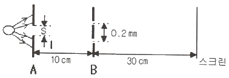
- 0.25mm
- 0.50mm
- 0.75mm
- 1.00mm
(정답률: 62%)
40. 투과형 홀로그램을 기준파로 비출 때 기준파의 파장이 변호함에 따라 재생 상에 일어나는 변화가 아닌 것은?
- 크기가 변화한다.
- 모양이 달라진다.
- 밝기가 달라진다.
- 재생위치기 달라진다.
(정답률: 53%)
3과목: 광학계측과 광학평가
41. 진공 중에서 열 증발 방법으로 광학 렌즈 표면에 광학 박막을 만들려고 한다. 작업 공정에 관한 설명으로 옳지 않은 것은?
- 일반적으로 단층 무반사 박막으로는 MgF2를 사용한다.
- 고품질 박막을 증착하기 위해서 챔버 내부의 진공도는 10-5 Torr 이하에서 증착을 시작한다.
- 간단한 단층 거울 코팅에는 알루미늄을 사용한다.
- 두께가 균일한 박막을 얻기 위하여 증착 작업 중에는 기판의 회전 작업을 멈추어야 한다.
(정답률: 63%)
42. 볼록렌즈와 오목렌즈를 접합하여 하나의 렌즈로 만들었을 때 볼록렌즈는 BK7 재료로 오목렌즈는 F2 재료를 사용하여 만들었다면 이 접합렌즈를 만든 가장 큰 목적은 무엇인가?
- 구면수차를 줄이기 위해서이다.
- 색지움 렌즈를 만들기 위해서이다.
- 렌즈 초점 거리를 조절하기 위해서이다.
- 광학계에서 나타나는 왜곡 수차를 줄이기 위해서이다.
(정답률: 67%)
43. 어떤 현미경을 대물렌즈 초점과 대안렌즈의 초점 사이의 거리가 16.0cm 가 되도록 설계하였다. 이 현미경에서 20×의 배율을 갖는 대물렌즈의 초점거리는 얼마가 되어야 하는가?
- 20.0 cm
- 16.0 cm
- 4.0 cm
- 0.8 cm
(정답률: 37%)
44. 프리즘을 이용하는 분광기를 제작하고자 한다. 프리즘의 재질로는 아래의 여러 유리가 있는데 이 중에서 분해능을 최대로 하는 유리는 어느 것인가?
- 511 - 635
- 574 - 577
- 584 - 460
- 6⑤ – 436
(정답률: 50%)
45. 어떤 물질 안에서 빛의 속도가 1.5×108 m/s 이다. 이 물질의 굴절률은 얼마인가?
- 0.5
- 1.5
- 2.0
- 2.5
(정답률: 54%)
46. 렌즈의 뉴톤 링을 측정하여 알 수 있는 것은?
- 렌즈의 배율
- 렌즈의 굴절률
- 렌즈 표면의 곡률반경
- 렌즈의 주요점의 위치
(정답률: 58%)
47. 색수차가 보정된 그림과 같은 접합렌즈가 양의 굴절능을 가질 때, 이 접합렌즈에서 볼록렌즈와 오목렌즈의 적절한 재질의 조합은?
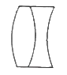
- 볼록렌즈와 오목렌즈 모두 프린트 유리
- 볼록렌즈와 오목렌즈 모두 크라운 유리
- 볼록렌즈는 크라운 유리, 오목렌즈는 프린트 유리
- 볼록렌즈는 프린트 유리, 오목렌즈는 크라운 유리
(정답률: 59%)
48. MgF2 코팅 약품을 사용하여 연마된 BK7 렌즈 표면에 기준 파장 λ에 대해 단층 반사감소 박막을 입히려고 한다. 다음 중 가장 좋은 증착막 조건은?
- λ/8 광학 두께로 입힌다.
- λ/4 광학 두께로 입힌다.
- λ/2 광학 두께로 입힌다.
- λ의 광학 두께로 입힌다.
(정답률: 58%)
49. 삼각 프리즘에서 굴절률에 따른 빛의 편향(deviation)과 분산에 관한 설명으로 옳은 것은?
- 굴절률이 크면 분산이 크다.
- 굴절률이 크면 분산이 작다.
- 굴절률이 크면 많이 편향된다.
- 굴절률이 크면 적게 편향된다.
(정답률: 59%)
50. 플라스틱 렌즈가 광학유리 렌즈보다 좋은 점을 설명한 것 중 틀린 것은?
- 열팽창 계수가 작다.
- 일반적으로 원자재 값이 저렴하다.
- 필요시 원자재에 염색을 할 수 있다.
- 비구면도 용이하게 성형(mold) 할 수 있다.
(정답률: 54%)
51. 지름이 10cm인 대물경의 각 분해능(angular resolution)은 약 얼마인가? (단, 빛의 파장은 500nm 이다.)
- 0.2 sec
- 0.7 sec
- 1.3 sec
- 2.6 sec
(정답률: 43%)
52. 다음 중 Wollaston 프리즘에 관한 설명으로 옳은 것은?
- Rochon 프리즘을 말한다.
- Nicol 프리즘과 동일 형태이다.
- 결정축에 평행한 2개의 방해석 또는 수정직각 프리즘으로 구성된다.
- 이 프리즘에 빛이 들어가면 편광명을 달리하여 굴절각이 다른 2개의 편광으로 나뉘어진다.
(정답률: 65%)
53. 다음은 편광현미경을 이용하여 결정을 관측한 코노스코프(cono-scope)이다. 단축 결정(uniaxial crystal)에 대한 것은?
(정답률: 54%)
54. 람스덴(Ramsden), 호이겐스(Huygens), 컬너(Kellner) 및 에르플(Erfle) 등의 이름과 관련된 것은?
- 접안렌즈
- 망원경
- 간섭계
- 굴절계
(정답률: 42%)
55. 대물렌즈와 대안렌즈가 사용되는 현미경의 총 배율은?
- 대물렌즈의 배율과 현미경 통의 길이를 곱한 값
- 대물렌즈의 배율과 대안렌즈의 배율을 곱한 값
- 대안렌즈 배율을 대물렌즈의 배율로 나눈 값
- 대물렌즈의 배율에 대안렌즈 배율과 현미경 통의 길이를 곱한 값
(정답률: 54%)
56. 카메라 렌즈의 f-수(f/#)와 필름의 노출시간(T) 사이의 관계로 옳은 것은?
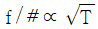
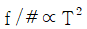
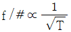
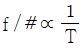
(정답률: 67%)
57. 비교적 고정밀도의 볼록렌즈나 오목렌즈에서 볼 수 있는 현상으로, 물체의 상은 선명하지만 모양이 변형되어 보이는 현상의 수차는?
- 색수차
- 코마수차
- 구면수차
- 왜곡수차
(정답률: 67%)
58. 그림과 같은 투과특성을 지닌 필터(filter)는? (단, 가시광선의 대역에서만 고려하기로 하며, 그래프에서 가로의 단위는 μm 이다.)
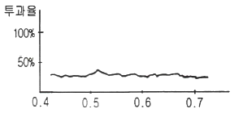
- 무반사 코팅
- 대역 투과필터
- 장파장 투과필터
- 중성농도필터(neutral dengity filter)
(정답률: 50%)
59. 다음 중 광학매질의 복굴절성을 이용한 프리즘이 아닌 것은?
- 포로(Porro) 프리즘
- 로촌(Rochon) 프리즘
- 월라스톤(Wollaston) 프리즘
- 글렌-푸코(Glan-Foucault) 프리즘
(정답률: 65%)
60. 다음 중 자외선에서 중적외선 영역까지의 넓은 파장 대역에 사용이 가능한 소재는?
- IRTRAN
- Zinc Selenide
- Calcium Fluoride
- Sodium Chloride
(정답률: 44%)
4과목: 레이저 및 광전자
61. 그림과 같이 수직방향으로 편광된 빛이 분극축이 45°로 편광투과방향을 회전시켠 편광자(Polarizer)에 입사하면 이 편광자를 통과하는 광량은 입사광량의 몇 %가 되는가? (단, 편광자는 이상적인 것으로 가정한다.)
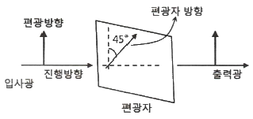
- 0%
- 45%
- 50%
- 100%
(정답률: 56%)
62. 광학결정에 의한 빛의 제어 기능 또는 변호나 기능이 아닌 것은?
- 광신호를 전기신호로 변환
- 전기신호를 광신호로 변환
- 광으로 음(音)을 제어
- 자기로 광을 제어
(정답률: 54%)
63. 레이저 빛의 특징으로 옳은 것은?
- 종파이고 공간에 매질이 있어야 전파된다.
- 횡파이고 공간에 매질이 없어도 전파된다.
- 종파이고 공간에 매질이 없어도 전파된다.
- 횡파이고 공간에 매질이 있어야 전파된다.
(정답률: 54%)
64. 석영결정의 Faraday효과를 이용하여 진동면을 45°회전시키고자 한다. 석영의 베르데 상수는 상온 20℃에서 0.0166(min of arc gauss-1 cm-1)이다. 자기장을 105 Gauss의 세기로 걸어주었을 때 석영의 두께는 약 얼마인가?
- 1.63cm
- 3.26cm
- 16.3cm
- 32.6cm
(정답률: 43%)
65. 다음 중 빛의 결맞음 길이가 가장 중요하게 이용되는 것은?
- 라만 산란
- 광전 효과
- 홀로그래피
- Fabry – Perot 간섭계
(정답률: 39%)
66. 다음 중 균질 선폭확대(homogeneous broadening)의 요인이 아닌 것은?
- 충돌
- 도플러(Doppler) 효과
- 레이저 발진관의 압력
- 에너지 준위의 수명(life time)
(정답률: 25%)
67. 이차 비선형과학효과(Susceptibility 2차항에 의한 결과)가 아닌 것은?
- Optical Rectification
- Harmonic Generation
- Sum-frequency Generation
- Four-Wave Mixing
(정답률: 65%)
68. 레이저 공진기(resonator)의 두 거울의 반사율이 각각 99% 이고 길이가 0.5m 일 때 단일 모드로 공진시 선폭을 구하면?
- 95 kHz
- 190 kHz
- 380 kHz
- 950 0
(정답률: 47%)
69. 다음 스톡스 벡터는 무슨 편광을 나타내는가?
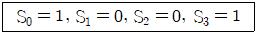
- 우원형 편광
- 좌원형 편광
- 선형편광(수평)
- 선형편광(수직)
(정답률: 58%)
70. 연속동작(continuous wave)레이저 발진시 공진기 내부 레이저 매질의 증폭에 의한 이득(g)과 회절, 거울투과율 등에 의한 손실(α)의 관계는?
- g ＞ α
- g ＜ α
- g = α
- g = √α
(정답률: 48%)
71. 방해석(calcite)을 사용하여 선형 편광자(linear polatizer)를 만들 때 적용되는 광학적 특성은?
- 복굴절
- 반사
- 회절
- 간섭
(정답률: 50%)
72. Michelson 간섭계에 He-Ne 레이저 빔을 광원으로 사용하여 실험할 때 다음 설명 중 틀린 것은?
- 파장폭(선폭)이 좁으면 빨강색의 간섭무늬가 뚜렷하게 나타난다.
- 간섭무늬가 동심원으로 나타날 때도 있고 평행선으로 나타날 때도 있다.
- 한쪽 거울을 광축방향으로 이동함으로써 동심원 무늬 전체가 평행으로 이동한다.
- 한쪽 거울을 광축방향으로 이동함으로써 동심원 무늬가 하나씩 사라지거나 생겨난다.
(정답률: 63%)
73. 부산송파 변조를 사용하는 방식으로 각각의 메시지를 서로 다른 부반송파로 변조하여 다수의 메시지를 동시에 광섬유를 통해 전송할 수 있는 방식은 다음 중 어떤 것인가?
- 시 분할 다중화
- 파장 분할 다중화
- 주파수 분할 다중화
- 헤테로다인 다중화
(정답률: 58%)
74. 다음 전기 광학 효과를 설명한 것 중 틀린 것은?
- 커(Kerr) 계수는 2차 전기 광학계수이다.
- 위상 변조기는 전기 광학 효과를 이용한 전기광학 소자이다.
- 횡방향 변조기는 광선의 진행 방향과 전압이 걸린 방향이 서로 직각이다.
- 비등방성 결정의 굴절률은 매질을 지나는 광의 진동 방향에 관계없다.
(정답률: 48%)
75. 광음향분광법(Acousto – Optic Spectroscopy)을 이용하여 측정할 수 있는 것은?
- 온도 측정
- 대기오염 측정
- 거리 측정
- 거대분자의 크기측정
(정답률: 67%)
76. N개의 광자가 비선형 결정을 지나면서 제3차 고조파 발생(third harmonic generation) 과정을 통하여 파장이 다른 광자로 손실없이 완전히 변환되었다. 발생한 제3차 고조파의 광자 수는 몇 개인가?
- N/3
- N/2
- N
- 3N
(정답률: 67%)
77. 레이저 광속에 대한 결맞음성의 종류와 측정 장치를 연결한 것 중 옳은 것은?
- 시간결맞음성 – 영의 실험
- 시간결맞음성 – 마이켈슨 간섭계
- 공간결맞음성 – Fabry Perot 간섭계
- 공간결맞음성 – 프리즘 분광기
(정답률: 50%)
78. 어떤 레이저의 출력이 10W이고 레이저 광속의 직경이 0.1cm 이다. 이 레이저를 렌즈로 집속하여 광속의 직경이 0.01cm 가 되게 하였다. 이 레이저의 단위면적당 세기(W/cm2)는 몇 배 증가하겠는가?
- 10배
- 100배
- 1000배
- 10000배
(정답률: 58%)
79. 굴절률 타원체(index ellipsoid) 방정식이 0.4X2 + 0.4Y2 + 0.3Z2 = 1 인 매질에서 x축 방향으로 편극된 광의 굴절률은 약 얼마인가?
- 1.38
- 1.48
- 1.58
- 1.68
(정답률: 42%)
80. 다음 중 파장 가변성이 좋아 분광학 등에 가장 널리 이용되는 레이저는?
- 색소 레이저
- 아르곤 레이저
- Nd – YAG 레이저
- 헬름 – 네온 레이저
(정답률: 44%)